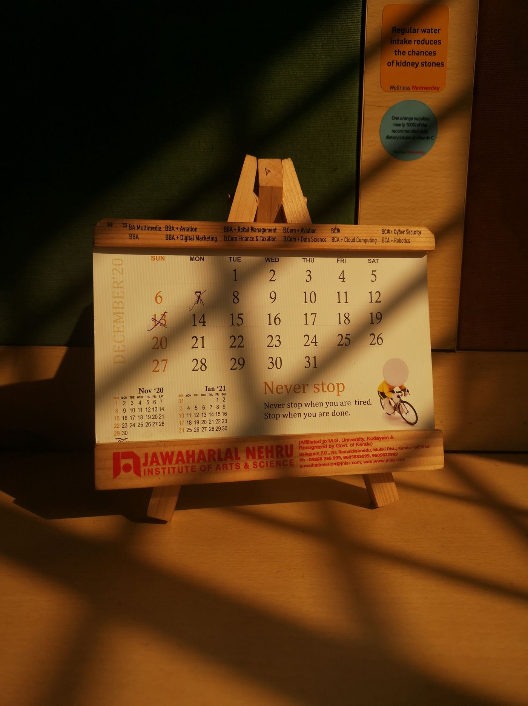

Open
Free
Free forever
Ten sealed entries. Letters and photographs. Release by hand whenever you choose. No card, no trial clock.

A private vault
A private vault for parents who cannot be there right now. Sealed until you decide your children are ready, in a week, or in twenty years.
Sealed · Encrypted · Private
ScrollSome words can’t be said today. A birthday missed, a question unanswered, an I love you with nowhere to land. DearYou holds them, exactly as you meant them, until they can finally be heard.
There are things a child should hear from their parent, not about them. DearYou keeps your words safe until the day they can finally land.
You don’t get to choose when life gets in the way. You can choose that your voice still gets through.
A letter unsent is not a letter unmeant. DearYou keeps it ready for the moment you couldn’t plan for.
A private safe space
Nothing is readable in transit, nothing is readable by us, and nothing opens early.
What you can leaveEncrypted end to end. No one at DearYou can ever read it.
You choose when the time is right, a certain date, a birthday, or in person.
Nominate someone with the code, so your words reach them if you cannot.
You don’t need to get it perfect. Just speak from the heart. One day, they’ll thank you for it.
01
Write a letter, leave a voice note on the way home, record a video that lasts forever or take a photo that says a thousand words.

02
Sealed entries are encrypted and locked from view until you say. Nothing is sent, nothing is shared, nothing surfaces by accident.

03
When the time comes, they use a code to gain access to a private place made just for them. Everything you kept, waiting exactly as you left it. A place you created for them.

Say it in small pieces, if needed.
Drafts stay private and unsealed for as long as you keep them. Come back to it next year, or in ten years time.

01
Record straight from your device.
Your laugh, the way you say their name, the pause before you say something important. None of that survives in a photograph. Leave your actual voice, not just your words.
00:00
02
So they can see you saying it.
A birthday, a first day of school, the advice you wish to give in person. Recorded once, kept exactly as sent.
Video message
0:00 / 0:00
03
Some things say more than a letter ever could.
Upload the photographs, the certificates, the small handwritten notes that never made it into an album. A short caption keeps the memory attached to the image, long after you are not there to explain it.
04
The right moment isn’t always one you can predict.
Set a date years ahead, hand it over yourself when the time feels right, or trust someone close to you to know when it is needed.

05
A deployment, a diagnosis, a custody arrangement that keeps you from the room. A distance no one chose but everyone has to live with.
DearYou was built for the ones still showing up, even when they cannot be there, and for the ones who know how short the window is.
From the first hundred families
I could not phone her. I could still tell her about her first day, seven years late.
For two years, my daughter only knew my voice through a screen that froze and dropped out. So now I hold nothing back.
I wrote his tenth birthday letter before he turned eight. He is eleven now, and has already opened three.
It is the only time in his life my son will hear me say I was scared, and that I loved him anyway.
I am not writing to convince her of anything. I am writing so there is no doubt left about how much I loved her, the whole time.
I was the one who packed his lunches for nine years. He should hear that from me instead of about me.
Pricing
Free
Free forever
Ten sealed entries. Letters and photographs. Release by hand whenever you choose. No card, no trial clock.
Most families
$9
Per month, billed yearly
Unlimited letters, voice and video. Scheduled release, birthday triggers, one named trustee, and full-quality storage for every child.
$390
One payment
Everything in Vault, held for life with no renewals to miss. Endowed storage, so a lapsed card can never close the vault on your children.